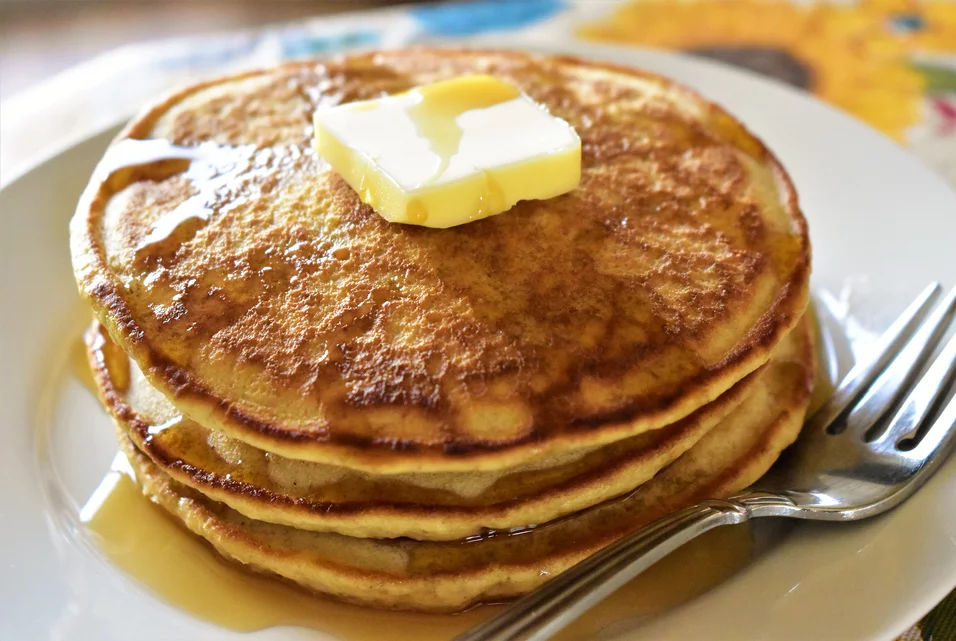

Pancakes

Description
This recipe is fast using the blender to mix ingredients. Pancakes come out fluffy and flavorful. Serve with warm syrup and butter. They are also excellent with warmed blueberries on top!
Ingredients
- 2 cups milk
- 2 eggs
- 1 cup all-purpose flour
- 1 cup whole wheat flour
- 3 tbsp baking powder
- 2 tbsp vegetable oil
- 2 tbsp while sugar
- 1 tbsp honey
- 1 tsp vanilla extract
- 1/2 teaspoon salt
- cooking spray
Steps
-
Combine milk, eggs, all-purpose flour, whole wheat flour, baking powder, vegetable oil, sugar, honey, vanilla extract, and salt in an electric blender; blend until smooth.
-
Place a skillet or griddle over medium heat until hot, 2 to 3 minutes. Spray with nonstick cooking spray.
-
Heat a lightly oiled griddle over medium-high heat. Drop batter by large spoonfuls onto the griddle and cook until bubbles form and the edges are dry, 3 to 4 minutes. Flip and cook until browned on the other side, 2 to 3 minutes. Repeat with remaining batter.
Back